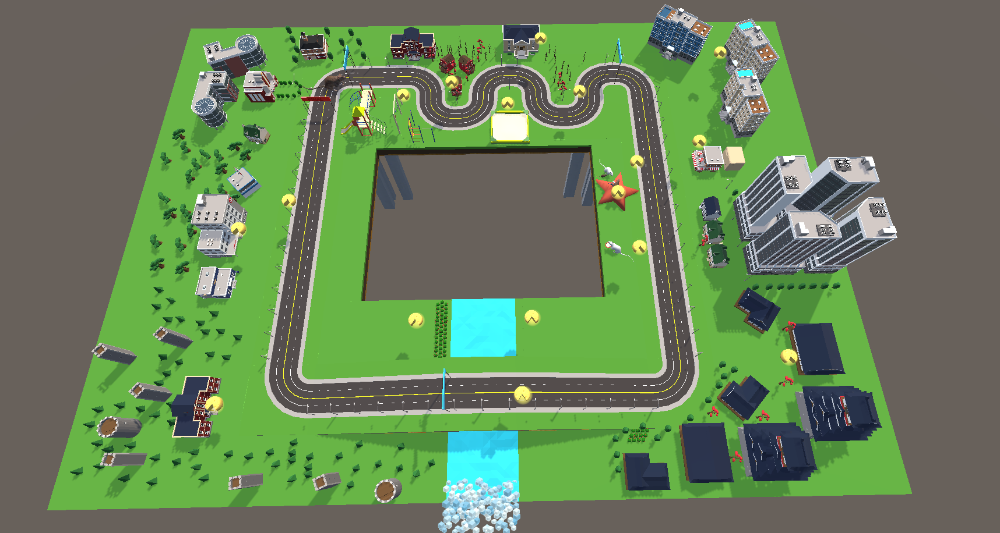
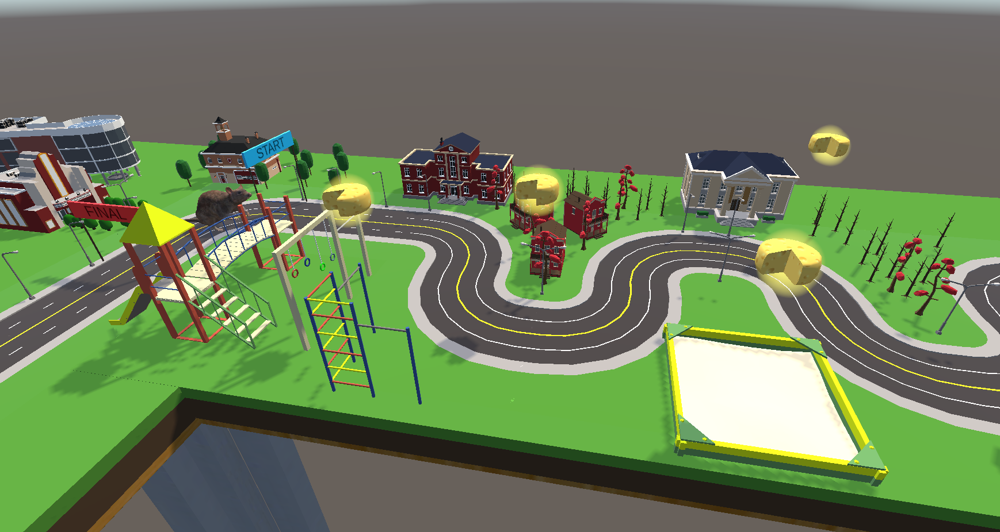

Woche 11
Gepostet am 03. Februar 2023 (Zuletzt geändert am 29. März 2023 )
3 Minuten • 482 Wörter
Während es in der Vorlesung diese Woche um Human-Centered Design, User-Centered Design und um Usability ging, ging es in meinem Projekt um grundlegendere Funktionen.
Erster Fokuspunkt war es, die Handpose “Aufheben” mit der gleichnamigen Methode “Aufheben” zu verbinden und die Ratte das T-Stück des Interaction Tasks aufheben zu lassen. Zuallererst wurde das T, welches wir mit dem ursprünglichen Parcour erhalten hatten, durch ein Stück Käse ersetzt. Um nichts in der Hauptszene zu zerstören wurde in eine andere Szene gewechselt und dort die Funktion “Aufheben” erst einmal provisorisch implementiert. Da zu diesem Zeitpunkt auch getestet wurde, wie man ein Material auf einem 3D-Objekt ändert ist der Boden dieser Szene zu einer riesigen Käseplatte geworden.

Ziel war es, das Script MooveCheese.cs so zu bauen, dass der Spieler, wenn sich die Ratte im richtigen Bereich befindet, die Aufheben-Pose nutzt, um das Käsestück aufzuheben. Sobald er diese Pose nicht mehr hält soll der Käse losgelassen werden. Dies sollte auf die Entfernung funktionieren, so dass im Spielbereich die Ratte sich auf den Käse zubewegt und sie den Käse mit dem Mund in die richtige Position bewegt. Die Bewegung des Käses war sehr schnell und leicht umgesetzt. Hierbei reichte es die Position des Käses um einen prozentualen Anteil der Verschiebung der Hand zu verändern. Die Rotation hingegen wurde komplex. Hier musste mit Quaternionen gearbeitet werden. Die Unity-Dokumentation sagt zu Quaternionen: “Ändere Werte nur, wenn du genau weißt was du tust.” Es gibt aber einige hilfreiche Funktionen auf Quaternionen - diese habe ich nur erst einmal nicht gefunden und versucht die Quaternionen händisch zu berechnen. Das hat auch funktioniert, allerdings nur um eine bestimmte Achse. Die ersten Versuche der RotateTheCheese() finden sich als Kommentar in der MooveCheese.cs..

Am Ende konnte mit nur einer Quaternionen-Funktion namens “EulerAngles” jede Rotation umgesetzt werden. Als diese Bewegungen am Ende alle in der Übungsszene funktionierten, wurde das Script an den Käse in der ‘richtigen’ Szene angehängt und funktionierte ohne Änderungen.
Für die eigentliche Lernumgebung waren bisher jedoch nur zwei Würfel “auf den Parcour gestellt worden”. Um das so zu gestalten, dass die Spieler*innen ohne lange Anleitung meinerseits erkennen können, was sie tun sollen, wurde während des “Lernens” der Parcour ausgeblendet und nur die Ratte und die zwei Lern-Würfel sichtbar gelassen. Der*Die Spieler*in sieht zu Beginn also zwei Würfel.

Wird die Hand in den rechten Würfel gehalten, startet ein Timer. Nach 5 Sekunden wird die Handpose gespeichert. Anschließend kann im linken Würfel “bestätigt” werden, dass diese Pose so gefällt. Eigentlich sollte hier noch ein “Reset” Würfel eingebaut werden, dies war zeitlich aber leider nicht mehr machbar.
Wenn die Posen gespeichert wurden verschwinden die Würfel, die Ratte läuft zum Start des Parcours und die Umgebung erscheint.
Damit die spielende Person aber einfacher an die Würfel kommt und die Ratte jederzeit leichter beobachten, sowie die Texte einfacher lesen kann, wurde der Parcour erneut umgebaut. Die Person steht nun inmitten vom Tisch, auf welchem sich der Parcour befindet.

